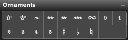

Palette Overview

The following describes each of the tools in the Ornaments palette:
- Insert Trills. There are six trill tools. Use the trill 1 and trill 2 marks to indicate a trill (some scores use different trill marks to indicate different trill directions or trill intervals). Use the Trill Section tool to insert a scalable trill section. Use the three Trill Accidental tools to indicate accidentals in a trill mark. Using the Trill Tools discusses all of these tools in detail.
- Insert Mordents. There are three Mordent tools. Although there are sometimes different schools of thought, generally the short mordent indicates that you play the first three notes of a downward trill; the inverted mordent indicates that you play the first three notes of an upward trill; and the inverted long mordent indicates that you play the first five notes of an upward trill. Select the appropriate tool to create the desired mordent.
- Insert Turn. Use this tool to create a turn (similar to the concluding four notes in a trill).
- Insert Fingerings. There are five fingering tools that you can use to indicate which finger should play a particular note.
For more information, see:
Using the Ornaments Palette
Using the Trill Tools
Using the Mordent Tools
Using the Fingering Tools